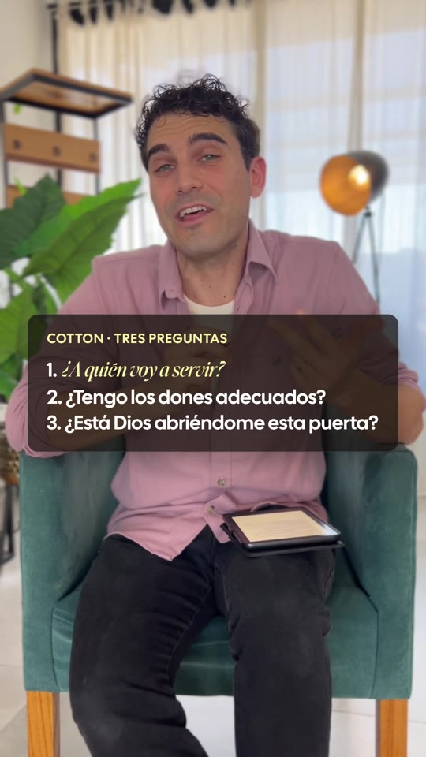

Herramienta de edición con IA · gratis
Edita tus videos


Edita tus videos
con sentido
Para quienes tienen un mensaje, no un producto. Grabas, se lo pides como a una persona, y recibes tu video terminado.
Quiero la herramienta gratisFunciona dentro de Claude, en Mac y Windows.
Reel a cámara
cortes, zooms y subtítulos

Reel con gráficos
tarjetas, citas y datos
Clips de prédicas
desde tu video largo
Reel animado
con tu propia voz
La estrella